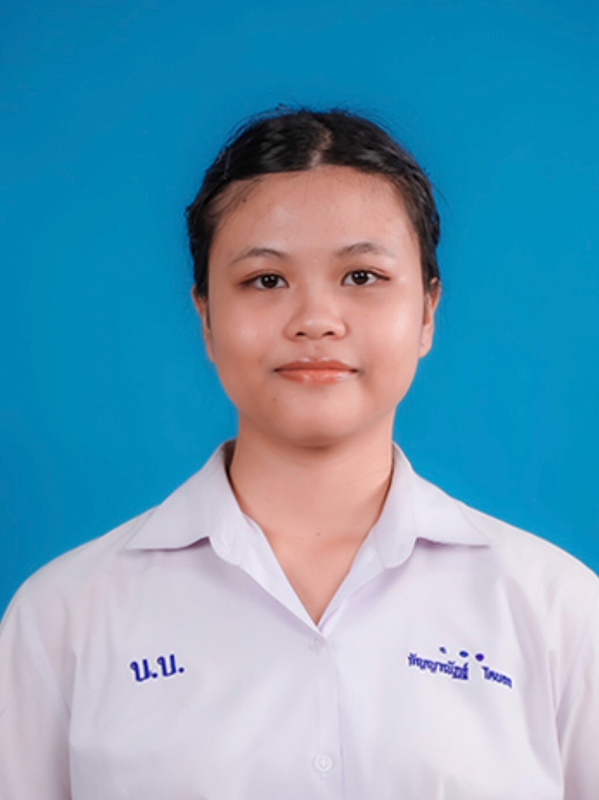

About Me
ทำความรู้จักฉันให้มากขึ้น ผ่านเรื่องราว ความสนใจ และสิ่งที่ฉันชอบ

Personal Information
My Story
ฉันเป็นคนที่ชอบเรียนรู้สิ่งใหม่ ๆ
และสนุกกับการได้ลองทำสิ่งที่ไม่คุ้นเคย
ฉันชอบทั้งงานที่ใช้ความคิดสร้างสรรค์
เช่น การวาดรูป การออกแบบ
และการสร้างโมเดล 3 มิติ
รวมถึงงานที่ต้องใช้การคิดวิเคราะห์
การคำนวณ และการแก้ปัญหา
สิ่งหนึ่งที่ฉันให้ความสำคัญคือ
“อิสระในการเรียนรู้”
ฉันชอบค้นหาวิธีของตัวเอง
ทดลองสิ่งใหม่
และเผชิญกับความท้าทาย
ที่ช่วยให้ตัวเองพัฒนาไปได้ไกลกว่าเดิม
Interests
Drawing
วาดรูปและสร้างงานศิลปะ
3D Design
สนุกกับการออกแบบโมเดล 3 มิติ
Calculation
ชอบการคำนวณและแก้โจทย์
Gaming
ชอบเกมที่มีระบบ กลยุทธ์ และความท้าทาย
Learning
สนุกกับการค้นหาและเรียนรู้สิ่งใหม่
Freedom
ชอบพื้นที่ที่เปิดโอกาสให้คิดและทดลองอย่างอิสระ
Skills
Drawing
การวาดภาพและถ่ายทอดไอเดีย ผ่านงานศิลปะ
3D Design
การออกแบบและสร้างโมเดลสามมิติ
Mathematics
การคิดคำนวณ วิเคราะห์ และแก้ปัญหา
English
สามารถสื่อสารภาษาอังกฤษ ในระดับพื้นฐาน และกำลังพัฒนาต่อ
Creative Thinking
ชอบคิดแนวทางใหม่ และสร้างไอเดียของตัวเอง
Problem Solving
สนุกกับการแก้ปัญหา และความท้าทาย